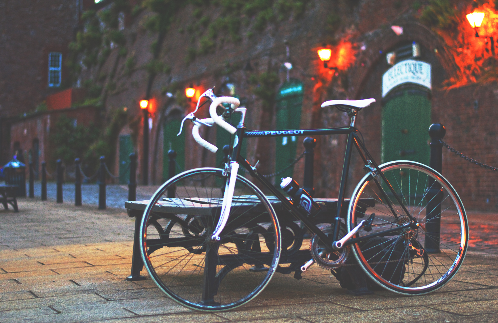
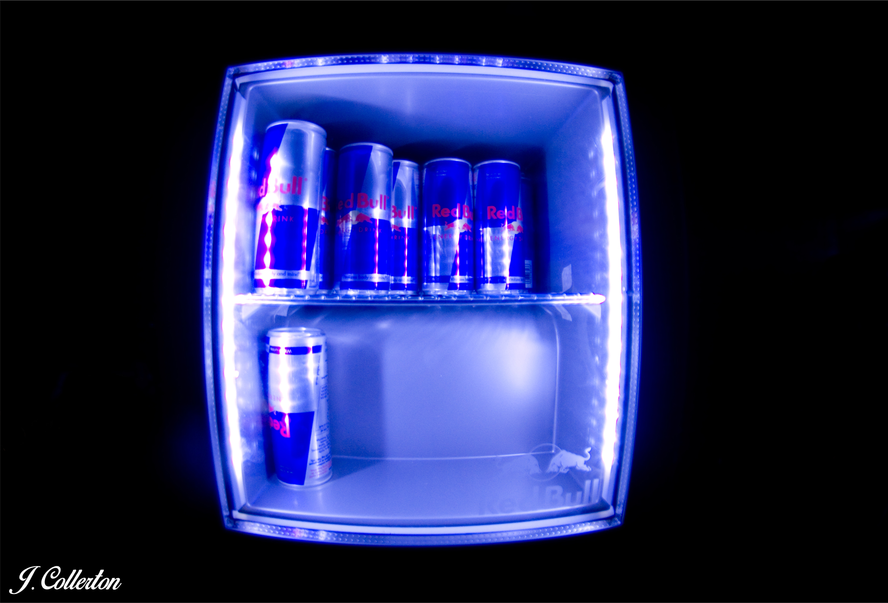
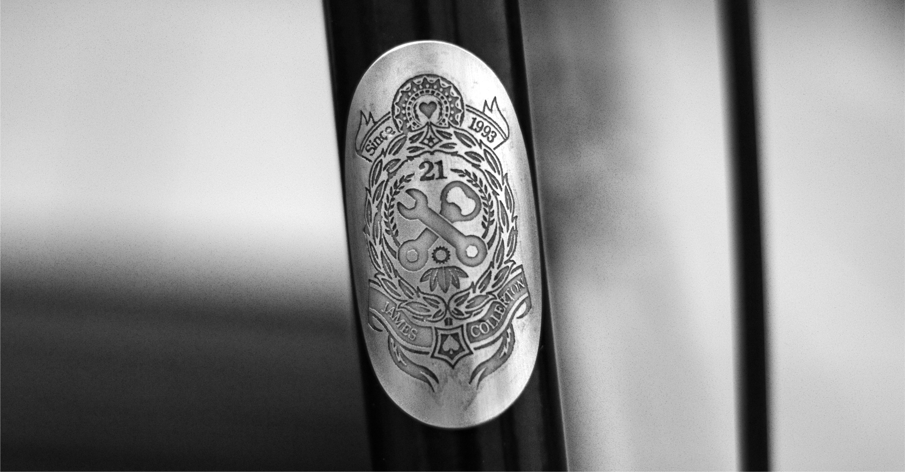
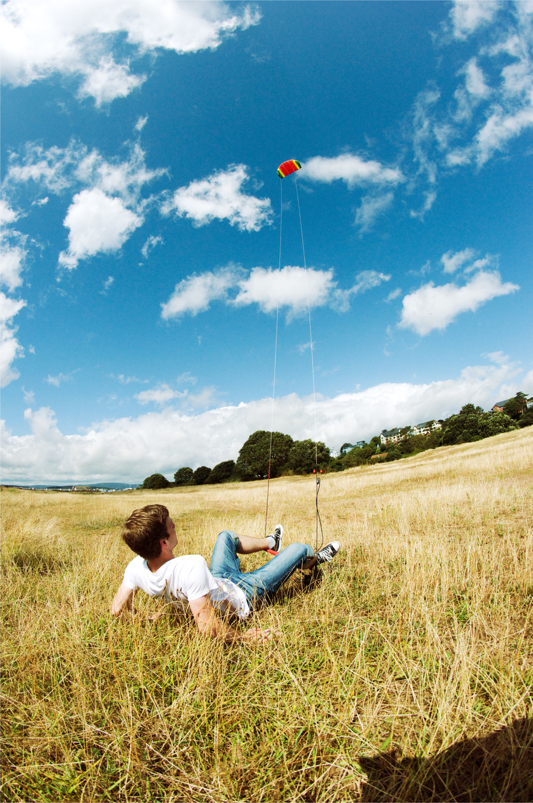
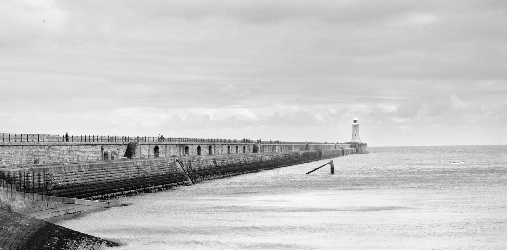

Welcome to my photography page! Here you will find a selection of photos you can trawl through at your leisure. There should be a bit of everything here, but you can use the navigation bar at the top to refine what you would like to look at.
Phone: 07942-333-456
Email: jc1175@my.bristol.ac.uk
Website: You're here...
Address: Flat 3, Mars, Space, A Galaxy Far, Far Away, 123 456
Email Me
jc1175@my.bris.ac.uk
Charlotte
This is a picture of my girlfriend, Charlotte. It was taken on the train from Bristol to London. Personally I like the rain on the window and the soft light.
New Wheels

For my 21st birthday my parents helped me pay for parts to refurbish my dad's old bike. I put on new wheels, tyres, brakes and gears and made this. It was interesting to try using my hands for a bit, as well as my head. When I have time I like cycling, hopefully I'll have a bit more time for it after I'm done!
Red Bull

When some friends of mine threw a Red Bull sponsored event I was lucky enough to be asked to do the photography. Not really having done much event photography before I thought it would be interesting to have a go. Definitely learnt a lot from the experience!
Bike Badge

As part of putting together my new bike for my 21st I got a custom headbadge for it. Not sure if it's readable, but you can see my date of birth, name and age on it.
Sunny Day

I worked at a software firm called Sparx over summer and they took us PowerKiting. It was a good laugh, but quite hard!
Lighthouse

This lighthouse is near where I live in Newcastle. I think I took this over summer when I was back home. It's quite a nice area of the city but I don't get to go there much which is a shame.